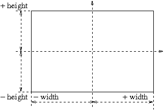
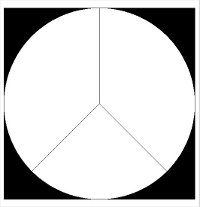

Cette proglet permet de manipuler une petite image de résolution variable, dont les coordonnées se définissent ainsi:

c'est à dire que l'abscisse (la position horizontale ou largeur, width en anglais) va de
-width à
+width (de gauche à droite)
et l'ordonnée (la position verticale ou hauteur, height en anglais) va de
-height à
+height (de bas en haut).
La fonction:
où
width et
height sont des
int permet d'afficher une nouvelle image de largeur et hauteur données tandis que la fonction
où
image est le lien «url» de l'image, permet d'afficher image disponible sur internet (attention sa taille doit rester modeste inférieur
à 500
2)
tandis que
int width = getWidth();
int height = getHeight();
|
renvoient la largeur (width) et hauteur (height) de l'image qui a été chargée.
Pour définir un point de couleur dans cette image la fonction
setPixel:
- où x est un int, entre [-width, +width], abscisse du point;
- où y est un int, entre [-height, +height], ordonnée du point;
- où color est un String qui donne la couleur du point, ses valeurs étant
"black", "blue", "cyan", "gray", "green", "magenta", "orange", "pink", "red", "white", "yellow".
permettre d'écrire un pixel couleur dans cette image.
Pour définir lire/écrire un point monochrome les fonctions
setPixel/getPixel:
int valeur = getPixel(x, y);
setPixel(x, y, valeur);
|
- où x est un int, entre [-width, +width], abscisse du point;
- où y est un int, entre [-height, +height], ordonnée du point;
- où valeur est un entier entre 0 (pour le "noir") et 255 (pour le "blanc"),
toutes les valeurs entre 0 et 255 définissant les valeurs de gris,
permettre de lire/écrire un pixel monochrome dans cette image.
Un
exemple d'utilisation: lors de la démonstration, le signe de la paix va s'afficher:

ceci, à différentes résolutions 256, 128, 64, 32, 16, 8, 4, 2, 1. Avec une bonne résolution il sera très lisible, puis
petit à petit il se réduira à quelques pixels.